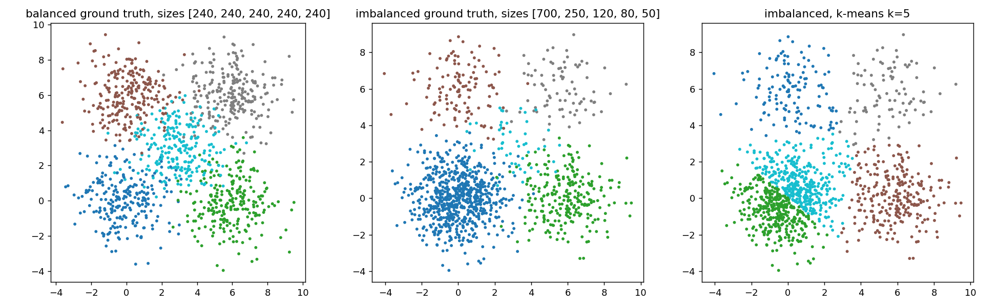
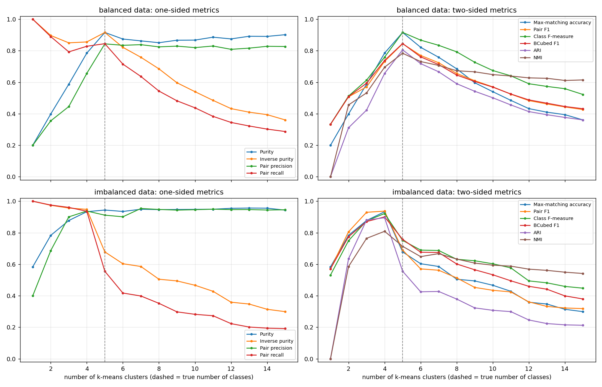
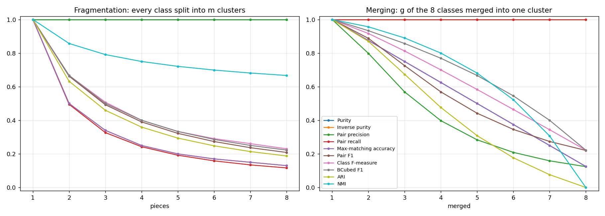
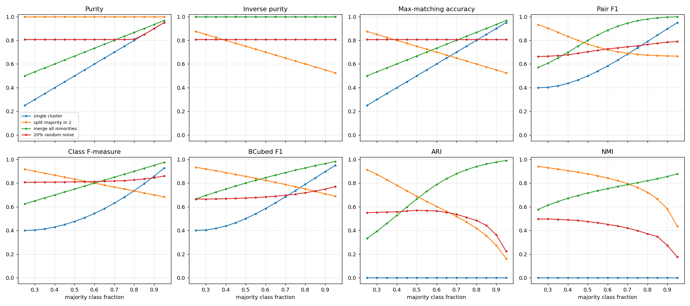
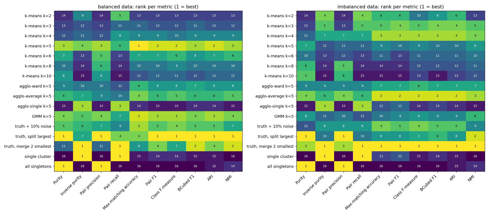
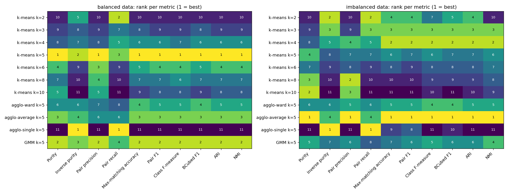
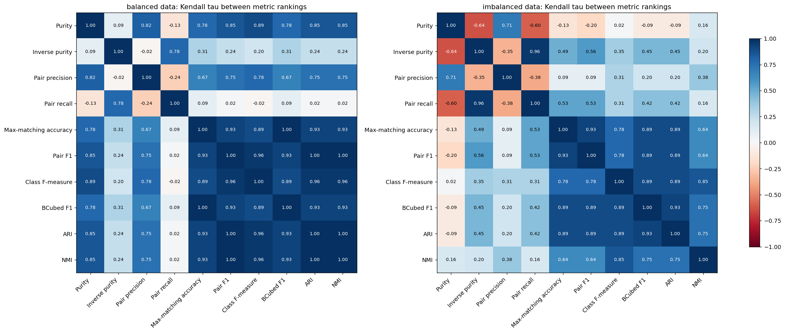

A contingency-matrix study of purity, maximum-matching accuracy, precision, recall and F-measure under fragmentation, merging and class imbalance
Research question. How can evaluation metrics produce conflicting conclusions about clustering quality?
| Name | |
| Roll / Student ID | |
| Course | |
| Instructor | |
| Date of submission |
External clustering metrics compress the contingency matrix between predicted clusters and true classes into a single number, and each compression encodes a different notion of error. We implement purity, inverse purity, maximum-matching accuracy, pair-counting precision, recall and F1, the class F-measure, BCubed, ARI and NMI from one contingency matrix. We then evaluate them under controlled fragmentation and merging, a class-imbalance sweep, k-means with k = 1…15, and a ranking of 16 candidate solutions on balanced and imbalanced data.
One-sided metrics are maximised by degenerate clusterings. Pair recall and inverse purity peak at k = 1. Purity and pair precision plateau near 0.95 for every k ≥ 4 and reach 1.0 only on refinements of the truth, such as putting every point in its own cluster. Metrics without chance correction prefer a single all-inclusive cluster over a solution with one fragmentation error once the majority class is large enough: above exactly p = 2/3 for accuracy, and somewhere in (0.75, 0.80] for BCubed F1. ARI, which is chance-corrected, never does. NMI never does either, but only because a single cluster carries zero mutual information. NMI is not chance-corrected: it gives "all singletons" 0.286 where ARI gives 0. Among 11 solutions produced by clustering algorithms, the mean Kendall rank correlation between six two-sided metrics drops from 0.95 on balanced data to 0.83 on imbalanced data.
Conflicts arise from four design choices hidden inside each metric: which error type it penalises, whether it counts points or pairs, how it matches clusters to classes, and whether it corrects for chance. Class imbalance and a wrong number of clusters amplify all four.
Clustering is unsupervised, so when ground-truth labels exist the natural evaluation is to compare the predicted partition with the true one. Cluster identifiers are arbitrary, however, so every external metric first builds the contingency matrix (true classes × predicted clusters) and then summarises it. The research question is how the choice of summary can change the verdict.
Two failure modes are central:
Class imbalance matters because it changes how much each class contributes to a point-weighted or pair-weighted score.
Data. The data are two-dimensional Gaussian blobs with 5 classes around fixed centres (standard deviation 1.3, so neighbouring classes overlap). The balanced version has 5 × 240 points; the imbalanced one has class sizes [700, 250, 120, 80, 50]. The controlled experiments use synthetic label vectors so that the type and size of every error is known exactly.
Clusterings. k-means (k = 1…15), agglomerative clustering (ward, average and single linkage), a Gaussian mixture model, and constructed corruptions of the truth (fragmenting a class, merging classes, random label noise, one cluster, all singletons).
Comparison of rankings. For each metric, the solutions are ranked from best to worst. Agreement between two metrics is measured by Kendall's tau over solution scores and by the disagreement rate: the fraction of solution pairs, among those not tied under either metric, that the two metrics order in opposite directions.
The implementation is verified by unit tests against textbook values and scikit-learn.
Every table and figure is regenerated by python experiments/run_all.py.
Let n_ij be the number of points of true class i in predicted cluster j, a_i the
class sizes, b_j the cluster sizes and N the number of points.
| Metric | Definition | Error it ignores |
|---|---|---|
| Purity | Σ_j max_i n_ij / N | fragmentation (all singletons = 1) |
| Inverse purity | Σ_i max_j n_ij / N | merging (one cluster = 1) |
| Max-matching accuracy | best one-to-one class↔cluster assignment (Hungarian), matched points / N | none, but surplus clusters count fully as errors |
| Pair precision | pairs together in both / pairs together in prediction | fragmentation |
| Pair recall | pairs together in both / pairs together in truth | merging |
| Pair F1 | harmonic mean of pair precision and recall | weights classes by size² |
| Class F-measure | Σ_i (a_i/N) max_j F(i, j) (Larsen & Aone) | one cluster may serve several classes |
| BCubed F1 | per-point precision / recall, then F1 | — |
| ARI | Rand index corrected for chance | — |
| NMI | mutual information / mean entropy | not chance-corrected: lenient towards over-splitting (all singletons > 0); AMI is the corrected form |
| cluster 0 | cluster 1 | cluster 2 | cluster 3 | cluster 4 | cluster 5 | cluster 6 | cluster 7 | class size | |
|---|---|---|---|---|---|---|---|---|---|
| class 0 | 0 | 194 | 251 | 0 | 237 | 1 | 8 | 9 | 700 |
| class 1 | 130 | 0 | 2 | 0 | 0 | 0 | 99 | 19 | 250 |
| class 2 | 0 | 1 | 0 | 1 | 0 | 110 | 0 | 8 | 120 |
| class 3 | 0 | 0 | 0 | 75 | 0 | 0 | 0 | 5 | 80 |
| class 4 | 1 | 2 | 3 | 1 | 0 | 3 | 0 | 40 | 50 |
| cluster size | 131 | 197 | 256 | 77 | 237 | 114 | 107 | 81 | 1200 |
| majority class | 1 | 0 | 0 | 3 | 0 | 2 | 1 | 4 |
Purity credits each cluster with its majority class, so it is
0.947. Max-matching accuracy may use each class only once, so
the three surplus clusters count as errors and accuracy drops to 0.505. The
Hungarian mapping (cluster → class) is {2: 0, 0: 1, 5: 2, 3: 3, 7: 4}.

K-means with k = 1…15 on 5-class blobs (balanced: 5 × 240 points; imbalanced: [700, 250, 120, 80, 50]).
| Metric | best k (balanced) | best k (imbalanced) |
|---|---|---|
| Purity | 5 | 13 |
| Inverse purity | 1 | 1 |
| Pair precision | 5 | 7 |
| Pair recall | 1 | 1 |
| Max-matching accuracy | 5 | 4 |
| Pair F1 | 5 | 4 |
| Class F-measure | 5 | 4 |
| BCubed F1 | 5 | 4 |
| ARI | 5 | 4 |
| NMI | 5 | 4 |

The one-sided metrics are pulled towards the extremes. Inverse purity and pair recall are maximised by a single cluster (k = 1). Purity and pair precision move the other way, but on the imbalanced data they flatten out quickly. For every k ≥ 4, purity stays between 0.933 and 0.957 and pair precision between 0.901 and 0.954. Their nominal best k values in the table, k = 13 and k = 7, are not meaningful peaks within that plateau. Neither metric penalises extra clusters, and both reach 1.0 only on refinements of the truth such as all singletons.
On the imbalanced data, every two-sided metric prefers k = 4 to the true k = 5. The contingency matrices show why. At k = 5, k-means spends a centroid splitting the 700-point class in half, and the 50-point central class still gets no cluster of its own:
| cluster 0 | cluster 1 | cluster 2 | cluster 3 | cluster 4 | |
|---|---|---|---|---|---|
| class 0 | 2 | 353 | 6 | 0 | 339 |
| class 1 | 0 | 0 | 245 | 1 | 4 |
| class 2 | 117 | 0 | 0 | 1 | 2 |
| class 3 | 1 | 0 | 0 | 79 | 0 |
| class 4 | 11 | 0 | 10 | 9 | 20 |
At k = 4, the majority class stays intact and only the tiny class is lost:
| cluster 0 | cluster 1 | cluster 2 | cluster 3 | |
|---|---|---|---|---|
| class 0 | 12 | 676 | 12 | 0 |
| class 1 | 0 | 2 | 247 | 1 |
| class 2 | 119 | 0 | 0 | 1 |
| class 3 | 2 | 0 | 0 | 78 |
| class 4 | 17 | 6 | 18 | 9 |
Purity barely notices the split (0.944 at k = 5 vs 0.933 at k = 4). Max-matching accuracy collapses from 0.933 to 0.678 because one half of the majority class can no longer be matched. This is the same data and the same pair of clusterings, but purity and accuracy reach opposite conclusions.
Ground truth of 8 classes × 100 points; either split every class into m clusters or merge g classes into one.

| pieces | Purity | Inverse purity | Pair precision | Pair recall | Max-matching accuracy | Pair F1 | Class F-measure | BCubed F1 | ARI | NMI |
|---|---|---|---|---|---|---|---|---|---|---|
| 1 | 1.000 | 1.000 | 1.000 | 1.000 | 1.000 | 1.000 | 1.000 | 1.000 | 1.000 | 1.000 |
| 2 | 1.000 | 0.500 | 1.000 | 0.495 | 0.500 | 0.662 | 0.667 | 0.667 | 0.632 | 0.857 |
| 3 | 1.000 | 0.340 | 1.000 | 0.327 | 0.340 | 0.492 | 0.507 | 0.500 | 0.459 | 0.791 |
| 4 | 1.000 | 0.250 | 1.000 | 0.242 | 0.250 | 0.390 | 0.400 | 0.400 | 0.359 | 0.750 |
| 5 | 1.000 | 0.200 | 1.000 | 0.192 | 0.200 | 0.322 | 0.333 | 0.333 | 0.294 | 0.721 |
| 6 | 1.000 | 0.170 | 1.000 | 0.158 | 0.170 | 0.273 | 0.291 | 0.286 | 0.248 | 0.699 |
| 7 | 1.000 | 0.150 | 1.000 | 0.134 | 0.150 | 0.237 | 0.261 | 0.250 | 0.214 | 0.681 |
| 8 | 1.000 | 0.130 | 1.000 | 0.116 | 0.130 | 0.208 | 0.230 | 0.223 | 0.187 | 0.667 |
Fragmentation (rows = pieces per class).
| merged | Purity | Inverse purity | Pair precision | Pair recall | Max-matching accuracy | Pair F1 | Class F-measure | BCubed F1 | ARI | NMI |
|---|---|---|---|---|---|---|---|---|---|---|
| 1 | 1.000 | 1.000 | 1.000 | 1.000 | 1.000 | 1.000 | 1.000 | 1.000 | 1.000 | 1.000 |
| 2 | 0.875 | 1.000 | 0.798 | 1.000 | 0.875 | 0.888 | 0.917 | 0.933 | 0.870 | 0.957 |
| 3 | 0.750 | 1.000 | 0.569 | 1.000 | 0.750 | 0.725 | 0.812 | 0.857 | 0.674 | 0.890 |
| 4 | 0.625 | 1.000 | 0.398 | 1.000 | 0.625 | 0.569 | 0.700 | 0.769 | 0.476 | 0.800 |
| 5 | 0.500 | 1.000 | 0.284 | 1.000 | 0.500 | 0.442 | 0.583 | 0.667 | 0.308 | 0.681 |
| 6 | 0.375 | 1.000 | 0.209 | 1.000 | 0.375 | 0.346 | 0.464 | 0.545 | 0.177 | 0.523 |
| 7 | 0.250 | 1.000 | 0.159 | 1.000 | 0.250 | 0.274 | 0.344 | 0.400 | 0.076 | 0.307 |
| 8 | 0.125 | 1.000 | 0.124 | 1.000 | 0.125 | 0.220 | 0.222 | 0.222 | 0.000 | 0.000 |
Merging (rows = number of classes merged).
Fragmentation is invisible to purity, pair precision and BCubed precision, all of which stay at 1.0. Merging is invisible to inverse purity, pair recall and BCubed recall. So any single one-sided score can rank a badly fragmented solution above a mildly merged one, or the reverse.
| Scenario | Purity | Inverse purity | Pair precision | Pair recall | Max-matching accuracy | Pair F1 | Class F-measure | BCubed F1 | ARI | NMI |
|---|---|---|---|---|---|---|---|---|---|---|
| balanced: split one class in 2 | 1.000 | 0.875 | 1.000 | 0.874 | 0.875 | 0.933 | 0.917 | 0.933 | 0.913 | 0.941 |
| balanced: merge two classes | 0.750 | 1.000 | 0.666 | 1.000 | 0.750 | 0.799 | 0.833 | 0.857 | 0.714 | 0.857 |
| imbalanced: split majority in 2 | 1.000 | 0.650 | 1.000 | 0.532 | 0.650 | 0.695 | 0.767 | 0.788 | 0.520 | 0.790 |
| imbalanced: merge two smallest | 0.950 | 1.000 | 0.981 | 1.000 | 0.950 | 0.991 | 0.955 | 0.966 | 0.980 | 0.945 |
| imbalanced: merge majority + smallest | 0.950 | 1.000 | 0.882 | 1.000 | 0.950 | 0.937 | 0.932 | 0.951 | 0.859 | 0.888 |
Separate synthetic labellings, distinct from the blob data and from Experiment 3. Balanced rows: 4 classes × 250 points. Imbalanced rows: class sizes [700, 150, 100, 50] (1000 points).
The same structural mistake costs very different amounts depending on which class it hits. On imbalanced data, splitting the majority class in half costs pair F1 a lot because it destroys a quadratic number of pairs. NMI, by contrast, stays relatively high (0.790 against an ARI of 0.520). Merging the two smallest classes barely registers under pair-based metrics (pair F1 0.991), but max-matching accuracy charges for every point of the unmatched class (0.950).
Four classes and 1000 points; the majority class holds a fraction p, and the rest is split evenly over three minority classes.

When does a degenerate one-cluster answer beat a solution with one fragmentation error (perfect except that the majority class is split in two)?
| Metric | crossover p lies in (sweep step 0.05) | exact crossover |
|---|---|---|
| Purity | never | – |
| Inverse purity | always | – |
| Max-matching accuracy | (0.65, 0.70] | p = 2/3 (single cluster scores p, split scores 1 − p/2) |
| Pair F1 | (0.70, 0.75] | – |
| Class F-measure | (0.75, 0.80] | – |
| BCubed F1 | (0.75, 0.80] | – |
| ARI | never | – |
| NMI | never | – |
The sweep moves p in steps of 0.05, so each crossover is only known to lie within one step. Accuracy has a closed form: the single cluster scores p and the split scores 1 − p/2, so they cross at exactly p = 2/3.
Best solution per metric as imbalance grows:
| Metric | p = 0.25 | p = 0.50 | p = 0.75 | p = 0.95 |
|---|---|---|---|---|
| Purity | split majority in 2 | split majority in 2 | split majority in 2 | split majority in 2 |
| Inverse purity | single cluster / merge all minorities | single cluster / merge all minorities | single cluster / merge all minorities | single cluster / merge all minorities |
| Max-matching accuracy | split majority in 2 | 20% random noise | merge all minorities | merge all minorities |
| Pair F1 | split majority in 2 | merge all minorities | merge all minorities | merge all minorities |
| Class F-measure | split majority in 2 | split majority in 2 | merge all minorities | merge all minorities |
| BCubed F1 | split majority in 2 | split majority in 2 | merge all minorities | merge all minorities |
| ARI | split majority in 2 | split majority in 2 | merge all minorities | merge all minorities |
| NMI | split majority in 2 | split majority in 2 | merge all minorities | merge all minorities |
The p = 0.50 row looks surprising: accuracy prefers 20% random noise (0.807) to both structural errors (split majority 0.750, merge minorities 0.667). Random noise costs about 20% of the points whatever the class sizes. Splitting the majority costs p/2 of the points, and merging the three minorities costs 2(1 − p)/3. Noise therefore wins under accuracy whenever both structural errors cost more than 20%, which in this sweep happens for p = 0.40, 0.45, 0.50, 0.55, 0.60, 0.65, 0.70.
At p = 0.95 the single cluster scores purity 0.950, accuracy 0.950 and pair F1 0.949, but ARI 0.000 and NMI 0.000. The two zeros have different causes. ARI is chance-corrected, so any labelling that is no better than random scores 0. NMI is not chance-corrected: it is 0 here only because a single cluster shares no information with the classes, and it still rewards over-splitting (all singletons score 0.286 on the imbalanced blobs). Metrics without chance correction inherit the majority-class baseline, so their absolute values become hard to interpret under imbalance, and their rankings can flip in favour of trivial solutions.
Each dataset gets 16 candidate solutions. 11 are produced by algorithms: k-means for several k, agglomerative clustering (ward, average and single linkage) and a GMM. The other 5 are controlled corruptions of the truth (10% noise, split largest class, merge two smallest classes) plus the two degenerate answers (one cluster, all singletons). Rankings are analysed for the full pool and for the 11 algorithmic solutions alone, which is the realistic model-selection setting.

One controlled corruption, truth, merge 2 smallest, is closer to the truth than any algorithm output, and every two-sided metric ranks it first. The other corruptions do not dominate: truth + 10% noise, for example, loses to the best algorithms on every two-sided metric.
| Metric | Top-ranked solution(s) |
|---|---|
| Purity | truth, split largest, all singletons |
| Inverse purity | truth, merge 2 smallest, single cluster |
| Pair precision | truth, split largest, all singletons |
| Pair recall | truth, merge 2 smallest, single cluster |
| Max-matching accuracy | truth, merge 2 smallest |
| Pair F1 | truth, merge 2 smallest |
| Class F-measure | truth, merge 2 smallest |
| BCubed F1 | truth, merge 2 smallest |
| ARI | truth, merge 2 smallest |
| NMI | truth, merge 2 smallest |
(imbalanced data; ties share rank 1)
Even here, the one-sided metrics crown a degenerate answer. Purity and pair precision give their maximum of 1.0 to "all singletons" as well as to the fragmented truth, while inverse purity and pair recall give theirs to "single cluster" as well as to the merged truth.


| Statistic | balanced / all | imbalanced / all | balanced / algorithms | imbalanced / algorithms |
|---|---|---|---|---|
| mean Kendall tau (all 10 metrics) | 0.520 | 0.432 | 0.593 | 0.398 |
| min Kendall tau (all 10 metrics) | -0.286 | -0.504 | -0.236 | -0.636 |
| mean disagreement rate (all 10 metrics) | 0.239 | 0.284 | 0.204 | 0.301 |
| mean Kendall tau (6 two-sided metrics) | 0.877 | 0.817 | 0.949 | 0.825 |
| min Kendall tau (6 two-sided metrics) | 0.745 | 0.600 | 0.891 | 0.636 |
| mean disagreement rate (6 two-sided metrics) | 0.060 | 0.091 | 0.025 | 0.087 |
| mean rank spread across two-sided metrics | 2.000 | 2.938 | 0.545 | 1.818 |
"Rank spread" is the average, over solutions, of (worst rank − best rank) that the six two-sided metrics give the same solution.
On the imbalanced data, the best algorithm according to the two-sided metrics is agglo-average k=5 by Max-matching accuracy, Pair F1, Class F-measure, BCubed F1, ARI, NMI. They do not agree on the worst one: k-means k=10 by Max-matching accuracy, Pair F1, BCubed F1; agglo-single k=5 by Class F-measure, ARI, NMI. The disagreements are not limited to near-ties either. The widest gap among the two-sided metrics is for k-means k=2, which is ranked 4 of 11 by Max-matching accuracy but 10 by NMI. Including one-sided metrics widens it further: over-split k-means with k = 10 is ranked 2 by purity and 11 by accuracy.
| Solution | Purity | Inverse purity | Pair precision | Pair recall | Max-matching accuracy | Pair F1 | Class F-measure | BCubed F1 | ARI | NMI |
|---|---|---|---|---|---|---|---|---|---|---|
| k-means k=2 | 0.783 | 0.974 | 0.687 | 0.976 | 0.783 | 0.806 | 0.749 | 0.775 | 0.635 | 0.585 |
| k-means k=3 | 0.877 | 0.957 | 0.901 | 0.961 | 0.877 | 0.930 | 0.875 | 0.871 | 0.881 | 0.764 |
| k-means k=4 | 0.933 | 0.948 | 0.938 | 0.936 | 0.933 | 0.937 | 0.922 | 0.901 | 0.895 | 0.809 |
| k-means k=5 | 0.944 | 0.678 | 0.912 | 0.555 | 0.678 | 0.690 | 0.751 | 0.758 | 0.556 | 0.714 |
| k-means k=6 | 0.935 | 0.603 | 0.901 | 0.417 | 0.603 | 0.570 | 0.690 | 0.676 | 0.425 | 0.648 |
| k-means k=8 | 0.947 | 0.505 | 0.948 | 0.352 | 0.505 | 0.513 | 0.632 | 0.602 | 0.379 | 0.633 |
| k-means k=10 | 0.948 | 0.467 | 0.946 | 0.282 | 0.467 | 0.435 | 0.603 | 0.533 | 0.308 | 0.594 |
| agglo-ward k=5 | 0.938 | 0.797 | 0.921 | 0.627 | 0.781 | 0.746 | 0.833 | 0.788 | 0.624 | 0.719 |
| agglo-average k=5 | 0.951 | 0.951 | 0.964 | 0.943 | 0.951 | 0.953 | 0.953 | 0.915 | 0.923 | 0.836 |
| agglo-single k=5 | 0.587 | 0.997 | 0.401 | 0.998 | 0.585 | 0.572 | 0.532 | 0.574 | 0.006 | 0.012 |
| GMM k=5 | 0.943 | 0.690 | 0.921 | 0.555 | 0.676 | 0.692 | 0.754 | 0.762 | 0.560 | 0.720 |
| truth + 10% noise | 0.906 | 0.906 | 0.928 | 0.826 | 0.906 | 0.874 | 0.910 | 0.833 | 0.798 | 0.686 |
| truth, split largest | 1.000 | 0.708 | 1.000 | 0.574 | 0.708 | 0.729 | 0.806 | 0.829 | 0.618 | 0.854 |
| truth, merge 2 smallest | 0.958 | 1.000 | 0.986 | 1.000 | 0.958 | 0.993 | 0.966 | 0.974 | 0.988 | 0.969 |
| single cluster | 0.583 | 1.000 | 0.399 | 1.000 | 0.583 | 0.571 | 0.532 | 0.571 | 0.000 | 0.000 |
| all singletons | 1.000 | 0.004 | 1.000 | 0.000 | 0.004 | 0.000 | 0.008 | 0.008 | 0.000 | 0.286 |
What amplifies them
Practical consequence: a single number cannot certify a clustering as better. Report a complementary pair that exposes both error types, such as pair or BCubed precision and recall, or purity and inverse purity. Add a chance-corrected score (ARI, or AMI rather than NMI) and show the contingency matrix itself, which is the only view that records exactly which classes were split or merged.
1from .contingency import (
2 METRIC_LABELS,
3 Contingency,
4 adjusted_rand_index,
5 bcubed,
6 class_f_measure,
7 contingency_matrix,
8 evaluate,
9 inverse_purity,
10 max_matching_accuracy,
11 normalized_mutual_info,
12 pair_counts,
13 pair_precision_recall_f,
14 purity,
15)
16
17__all__ = [
18 "METRIC_LABELS",
19 "Contingency",
20 "adjusted_rand_index",
21 "bcubed",
22 "class_f_measure",
23 "contingency_matrix",
24 "evaluate",
25 "inverse_purity",
26 "max_matching_accuracy",
27 "normalized_mutual_info",
28 "pair_counts",
29 "pair_precision_recall_f",
30 "purity",
31]
1"""Contingency-matrix based external clustering evaluation.
2
3Every metric here is computed from the contingency matrix ``M`` where
4``M[i, j]`` is the number of points of true class ``i`` assigned to predicted
5cluster ``j``. Row sums ``a_i`` are class sizes, column sums ``b_j`` are
6cluster sizes and ``N`` is the total number of points.
7"""
8
9from __future__ import annotations
10
11from dataclasses import dataclass
12
13import numpy as np
14from scipy.optimize import linear_sum_assignment
15
16
17@dataclass(frozen=True)
18class Contingency:
19 matrix: np.ndarray
20 classes: np.ndarray
21 clusters: np.ndarray
22
23 @property
24 def n(self) -> int:
25 return int(self.matrix.sum())
26
27 @property
28 def class_sizes(self) -> np.ndarray:
29 return self.matrix.sum(axis=1)
30
31 @property
32 def cluster_sizes(self) -> np.ndarray:
33 return self.matrix.sum(axis=0)
34
35 def to_frame(self):
36 import pandas as pd
37
38 return pd.DataFrame(
39 self.matrix,
40 index=[f"class {c}" for c in self.classes],
41 columns=[f"cluster {k}" for k in self.clusters],
42 )
43
44
45def contingency_matrix(y_true, y_pred) -> Contingency:
46 y_true = np.asarray(y_true)
47 y_pred = np.asarray(y_pred)
48 if y_true.shape != y_pred.shape or y_true.ndim != 1:
49 raise ValueError("y_true and y_pred must be 1-D arrays of equal length")
50 if y_true.size == 0:
51 raise ValueError("cannot evaluate an empty labelling")
52
53 classes, class_idx = np.unique(y_true, return_inverse=True)
54 clusters, cluster_idx = np.unique(y_pred, return_inverse=True)
55 matrix = np.zeros((classes.size, clusters.size), dtype=np.int64)
56 np.add.at(matrix, (class_idx, cluster_idx), 1)
57 return Contingency(matrix, classes, clusters)
58
59
60def _as_contingency(y_true_or_c, y_pred=None) -> Contingency:
61 if isinstance(y_true_or_c, Contingency):
62 return y_true_or_c
63 return contingency_matrix(y_true_or_c, y_pred)
64
65
66def _comb2(x) -> np.ndarray | float:
67 x = np.asarray(x, dtype=np.float64)
68 return x * (x - 1.0) / 2.0
69
70
71def _safe_div(num: float, den: float, empty: float) -> float:
72 return float(num / den) if den > 0 else empty
73
74
75def _f(p: float, r: float) -> float:
76 return 2.0 * p * r / (p + r) if (p + r) > 0 else 0.0
77
78
79# --- Set-matching metrics ---------------------------------------------------
80
81
82def purity(y_true, y_pred=None) -> float:
83 """Fraction of points belonging to the majority class of their cluster."""
84 c = _as_contingency(y_true, y_pred)
85 return float(c.matrix.max(axis=0).sum() / c.n)
86
87
88def inverse_purity(y_true, y_pred=None) -> float:
89 """Fraction of points belonging to the dominant cluster of their class."""
90 c = _as_contingency(y_true, y_pred)
91 return float(c.matrix.max(axis=1).sum() / c.n)
92
93
94def max_matching_accuracy(y_true, y_pred=None) -> tuple[float, dict]:
95 """Accuracy under the best one-to-one class/cluster mapping (Hungarian).
96
97 When the number of clusters differs from the number of classes, surplus
98 clusters (or classes) stay unmatched and all their points count as errors.
99 Returns the accuracy and the ``{cluster: class}`` mapping.
100 """
101 c = _as_contingency(y_true, y_pred)
102 rows, cols = linear_sum_assignment(c.matrix, maximize=True)
103 mapping = {c.clusters[j].item(): c.classes[i].item() for i, j in zip(rows, cols)}
104 return float(c.matrix[rows, cols].sum() / c.n), mapping
105
106
107def class_f_measure(y_true, y_pred=None) -> float:
108 """Larsen & Aone (1999) F-measure.
109
110 For each class, take the best F1 over all clusters, then average weighted
111 by class size. A cluster may be the best match for several classes.
112 """
113 c = _as_contingency(y_true, y_pred)
114 m = c.matrix.astype(np.float64)
115 a = c.class_sizes[:, None].astype(np.float64)
116 b = c.cluster_sizes[None, :].astype(np.float64)
117 precision = m / b
118 recall = m / a
119 with np.errstate(invalid="ignore", divide="ignore"):
120 f = np.where(m > 0, 2 * precision * recall / (precision + recall), 0.0)
121 return float((c.class_sizes * f.max(axis=1)).sum() / c.n)
122
123
124# --- Pair-counting metrics --------------------------------------------------
125
126
127def pair_counts(y_true, y_pred=None) -> dict[str, float]:
128 """Classify all N(N-1)/2 point pairs.
129
130 TP: same class & same cluster; FP: different class, same cluster;
131 FN: same class, different cluster; TN: different class & different cluster.
132 """
133 c = _as_contingency(y_true, y_pred)
134 same_both = float(_comb2(c.matrix).sum())
135 same_cluster = float(_comb2(c.cluster_sizes).sum())
136 same_class = float(_comb2(c.class_sizes).sum())
137 total = float(_comb2(c.n))
138 tp = same_both
139 fp = same_cluster - tp
140 fn = same_class - tp
141 tn = total - tp - fp - fn
142 return {"tp": tp, "fp": fp, "fn": fn, "tn": tn}
143
144
145def pair_precision_recall_f(y_true, y_pred=None) -> tuple[float, float, float]:
146 """Pairwise precision, recall and F1.
147
148 Precision: of pairs put together, the fraction that share a class.
149 Recall: of pairs sharing a class, the fraction put together.
150 0/0 precision (all singletons) is defined as 1 since no wrong pair is
151 asserted; 0/0 recall (all classes singletons) is defined likewise.
152 """
153 pc = pair_counts(y_true, y_pred)
154 p = _safe_div(pc["tp"], pc["tp"] + pc["fp"], 1.0)
155 r = _safe_div(pc["tp"], pc["tp"] + pc["fn"], 1.0)
156 return p, r, _f(p, r)
157
158
159def bcubed(y_true, y_pred=None) -> tuple[float, float, float]:
160 """BCubed precision, recall and F1 (Bagga & Baldwin 1998; Amigo et al. 2009)."""
161 c = _as_contingency(y_true, y_pred)
162 m = c.matrix.astype(np.float64)
163 sq = m**2
164 p = float((sq / c.cluster_sizes[None, :]).sum() / c.n)
165 r = float((sq / c.class_sizes[:, None]).sum() / c.n)
166 return p, r, _f(p, r)
167
168
169def adjusted_rand_index(y_true, y_pred=None) -> float:
170 c = _as_contingency(y_true, y_pred)
171 index = float(_comb2(c.matrix).sum())
172 sum_a = float(_comb2(c.class_sizes).sum())
173 sum_b = float(_comb2(c.cluster_sizes).sum())
174 expected = sum_a * sum_b / float(_comb2(c.n)) if c.n > 1 else 0.0
175 max_index = 0.5 * (sum_a + sum_b)
176 if np.isclose(max_index, expected):
177 return 1.0
178 return (index - expected) / (max_index - expected)
179
180
181# --- Information-theoretic --------------------------------------------------
182
183
184def _entropy(counts: np.ndarray) -> float:
185 p = counts[counts > 0] / counts.sum()
186 return float(-(p * np.log(p)).sum())
187
188
189def normalized_mutual_info(y_true, y_pred=None) -> float:
190 """NMI with arithmetic-mean normalisation (sklearn's default)."""
191 c = _as_contingency(y_true, y_pred)
192 if c.classes.size == c.clusters.size == 1:
193 return 1.0
194 m = c.matrix.astype(np.float64)
195 n = c.n
196 nz = m > 0
197 outer = np.outer(c.class_sizes, c.cluster_sizes).astype(np.float64)
198 mi = float((m[nz] / n * np.log(m[nz] * n / outer[nz])).sum())
199 h_true = _entropy(c.class_sizes.astype(np.float64))
200 h_pred = _entropy(c.cluster_sizes.astype(np.float64))
201 denom = 0.5 * (h_true + h_pred)
202 if denom <= 0:
203 return 1.0
204 return max(mi, 0.0) / denom
205
206
207# --- Bundle ------------------------------------------------------------------
208
209METRIC_LABELS = {
210 "purity": "Purity",
211 "inverse_purity": "Inverse purity",
212 "accuracy": "Max-matching accuracy",
213 "pair_precision": "Pair precision",
214 "pair_recall": "Pair recall",
215 "pair_f1": "Pair F1",
216 "class_f": "Class F-measure",
217 "bcubed_precision": "BCubed precision",
218 "bcubed_recall": "BCubed recall",
219 "bcubed_f1": "BCubed F1",
220 "ari": "ARI",
221 "nmi": "NMI",
222}
223
224
225def evaluate(y_true, y_pred=None) -> dict[str, float]:
226 """All metrics for one labelling; higher is better for every entry."""
227 c = _as_contingency(y_true, y_pred)
228 pp, pr, pf = pair_precision_recall_f(c)
229 bp, br, bf = bcubed(c)
230 return {
231 "purity": purity(c),
232 "inverse_purity": inverse_purity(c),
233 "accuracy": max_matching_accuracy(c)[0],
234 "pair_precision": pp,
235 "pair_recall": pr,
236 "pair_f1": pf,
237 "class_f": class_f_measure(c),
238 "bcubed_precision": bp,
239 "bcubed_recall": br,
240 "bcubed_f1": bf,
241 "ari": adjusted_rand_index(c),
242 "nmi": normalized_mutual_info(c),
243 "n_clusters": int(c.clusters.size),
244 }
1"""Controlled corruptions of a ground-truth labelling.
2
3Each function returns a new predicted labelling so that the exact kind and
4amount of error is known, which lets us attribute metric behaviour to a
5specific failure mode. Class ids passed in refer to the original values in
6``y_true``; outputs are relabelled to ``0..k-1``.
7"""
8
9from __future__ import annotations
10
11import numpy as np
12
13
14def _relabel(y) -> np.ndarray:
15 return np.unique(np.asarray(y), return_inverse=True)[1]
16
17
18def _encode(y_true):
19 classes, codes = np.unique(np.asarray(y_true), return_inverse=True)
20
21 def code_of(ids) -> np.ndarray:
22 ids = np.atleast_1d(np.asarray(ids))
23 pos = np.searchsorted(classes, ids)
24 if np.any(pos >= classes.size) or np.any(classes[np.minimum(pos, classes.size - 1)] != ids):
25 raise ValueError(f"unknown class id(s) {ids.tolist()}; classes are {classes.tolist()}")
26 return pos
27
28 return codes.astype(np.int64), code_of
29
30
31def fragment(y_true, classes, pieces: int, rng=None) -> np.ndarray:
32 """Split every class in ``classes`` into ``pieces`` near-equal clusters."""
33 rng = np.random.default_rng(rng)
34 y, code_of = _encode(y_true)
35 pred = y.copy()
36 next_label = int(y.max()) + 1
37 for cls in code_of(classes):
38 idx = np.flatnonzero(y == cls)
39 if pieces > idx.size:
40 raise ValueError(f"cannot split a class of {idx.size} points into {pieces} pieces")
41 rng.shuffle(idx)
42 for part in np.array_split(idx, pieces)[1:]:
43 pred[part] = next_label
44 next_label += 1
45 return _relabel(pred)
46
47
48def fragment_all(y_true, pieces: int, rng=None) -> np.ndarray:
49 return fragment(y_true, np.unique(y_true), pieces, rng)
50
51
52def merge(y_true, groups) -> np.ndarray:
53 """Merge classes; ``groups`` is an iterable of class-id collections."""
54 y, code_of = _encode(y_true)
55 pred = y.copy()
56 for group in groups:
57 codes = code_of(list(group))
58 pred[np.isin(y, codes)] = codes[0]
59 return _relabel(pred)
60
61
62def label_noise(y_true, rate: float, rng=None) -> np.ndarray:
63 """Independently, with probability ``rate``, move each point to a random other label."""
64 rng = np.random.default_rng(rng)
65 y = _relabel(y_true)
66 k = int(y.max()) + 1
67 pred = y.copy()
68 flip = rng.random(y.size) < rate
69 shift = rng.integers(1, k, size=flip.sum()) if k > 1 else 0
70 pred[flip] = (y[flip] + shift) % max(k, 1)
71 return pred
72
73
74def single_cluster(y_true) -> np.ndarray:
75 return np.zeros(len(y_true), dtype=np.int64)
76
77
78def singletons(y_true) -> np.ndarray:
79 return np.arange(len(y_true), dtype=np.int64)
1"""Tools for comparing how different metrics order the same solutions."""
2
3from __future__ import annotations
4
5import itertools
6
7import numpy as np
8import pandas as pd
9from scipy.stats import kendalltau
10
11
12def rank_solutions(scores: pd.DataFrame) -> pd.DataFrame:
13 """Rank solutions (rows) per metric (columns); 1 = best, ties share min rank."""
14 return scores.rank(axis=0, ascending=False, method="min").astype(int)
15
16
17def kendall_matrix(scores: pd.DataFrame) -> pd.DataFrame:
18 cols = scores.columns
19 out = pd.DataFrame(np.eye(len(cols)), index=cols, columns=cols)
20 for a, b in itertools.combinations(cols, 2):
21 tau = kendalltau(scores[a], scores[b]).statistic
22 out.loc[a, b] = out.loc[b, a] = tau
23 return out
24
25
26def disagreement_rate(scores: pd.DataFrame, tol: float = 1e-12) -> pd.DataFrame:
27 """Fraction of solution pairs that two metrics order in opposite directions.
28
29 Pairs tied under either metric are excluded, so 0 means the metrics never
30 contradict each other and 1 means they always do.
31 """
32 cols = scores.columns
33 values = scores.to_numpy()
34 i, j = np.triu_indices(len(scores), k=1)
35 diffs = values[i] - values[j]
36 signs = np.where(np.abs(diffs) <= tol, 0, np.sign(diffs))
37 out = pd.DataFrame(np.zeros((len(cols), len(cols))), index=cols, columns=cols)
38 for a, b in itertools.combinations(range(len(cols)), 2):
39 both = (signs[:, a] != 0) & (signs[:, b] != 0)
40 rate = float((signs[both, a] != signs[both, b]).mean()) if both.any() else 0.0
41 out.iloc[a, b] = out.iloc[b, a] = rate
42 return out
43
44
45def pairwise_conflicts(scores: pd.DataFrame, metric_a: str, metric_b: str, tol: float = 1e-12):
46 """List solution pairs (x, y) where metric_a prefers x but metric_b prefers y."""
47 rows = []
48 for x, y in itertools.permutations(scores.index, 2):
49 da = scores.at[x, metric_a] - scores.at[y, metric_a]
50 db = scores.at[x, metric_b] - scores.at[y, metric_b]
51 if da > tol and db < -tol:
52 rows.append((x, y, da, db))
53 return pd.DataFrame(rows, columns=["preferred_by_a", "preferred_by_b", "delta_a", "delta_b"])
1"""Run every experiment and write figures, CSVs and results/report.md.
2
3Usage: python experiments/run_all.py
4"""
5
6from __future__ import annotations
7
8import sys
9from pathlib import Path
10
11ROOT = Path(__file__).resolve().parents[1]
12sys.path.insert(0, str(ROOT))
13
14import matplotlib
15
16matplotlib.use("Agg")
17import matplotlib.pyplot as plt
18import numpy as np
19import pandas as pd
20from sklearn.cluster import AgglomerativeClustering, KMeans
21from sklearn.datasets import make_blobs
22from sklearn.mixture import GaussianMixture
23
24from clustermetrics import METRIC_LABELS, contingency_matrix, evaluate, max_matching_accuracy
25from clustermetrics import perturb
26from clustermetrics.ranking import (
27 disagreement_rate,
28 kendall_matrix,
29 pairwise_conflicts,
30 rank_solutions,
31)
32
33OUT = ROOT / "results"
34FIG = OUT / "figures"
35SEED = 0
36
37CENTERS = np.array([[0, 0], [6, 0], [0, 6], [6, 6], [3, 3]], dtype=float)
38CLUSTER_STD = 1.3
39DATASETS = {
40 "balanced": [240, 240, 240, 240, 240],
41 "imbalanced": [700, 250, 120, 80, 50],
42}
43TRUE_K = len(CENTERS)
44SINGLE_ERROR_BALANCED = [250, 250, 250, 250]
45SINGLE_ERROR_IMBALANCED = [700, 150, 100, 50]
46
47ONE_SIDED = ["purity", "inverse_purity", "pair_precision", "pair_recall"]
48TWO_SIDED = ["accuracy", "pair_f1", "class_f", "bcubed_f1", "ari", "nmi"]
49RANKED = ONE_SIDED + TWO_SIDED
50SWEEP_METRICS = ["purity", "inverse_purity", "accuracy", "pair_f1", "class_f", "bcubed_f1", "ari", "nmi"]
51
52
53# --- helpers -----------------------------------------------------------------
54
55
56def label(m: str) -> str:
57 return METRIC_LABELS.get(m, m)
58
59
60def md_table(df: pd.DataFrame, fmt: str = "{:.3f}", index: bool = True) -> str:
61 header = ([str(df.index.name or "")] if index else []) + [str(c) for c in df.columns]
62 lines = ["| " + " | ".join(header) + " |", "|" + "|".join(["---"] * len(header)) + "|"]
63 for idx, row in df.iterrows():
64 cells = [str(idx)] if index else []
65 for v in row:
66 if isinstance(v, (float, np.floating)):
67 cells.append("–" if np.isnan(v) else fmt.format(v))
68 else:
69 cells.append(str(v))
70 lines.append("| " + " | ".join(cells) + " |")
71 return "\n".join(lines)
72
73
74def make_dataset(sizes):
75 return make_blobs(
76 n_samples=sizes, centers=CENTERS, cluster_std=CLUSTER_STD, random_state=SEED
77 )
78
79
80def argmax_all(values: pd.Series, tol: float = 1e-9) -> list:
81 return list(values.index[values >= values.max() - tol])
82
83
84def heatmap(ax, data: pd.DataFrame, fmt: str, cmap: str, vmin=None, vmax=None):
85 im = ax.imshow(data.to_numpy(dtype=float), cmap=cmap, vmin=vmin, vmax=vmax, aspect="auto")
86 ax.set_xticks(range(data.shape[1]), [label(c) for c in data.columns], rotation=45, ha="right")
87 ax.set_yticks(range(data.shape[0]), [label(r) for r in data.index])
88 for i in range(data.shape[0]):
89 for j in range(data.shape[1]):
90 v = data.iat[i, j]
91 if pd.isna(v):
92 ax.text(j, i, "–", ha="center", va="center", fontsize=8)
93 continue
94 r, g, b, _ = im.cmap(im.norm(v))
95 color = "white" if 0.299 * r + 0.587 * g + 0.114 * b < 0.5 else "black"
96 ax.text(j, i, fmt.format(v), ha="center", va="center", fontsize=8, color=color)
97 return im
98
99
100# --- Experiment 0: data and a worked contingency matrix ------------------------
101
102
103def exp_datasets(data):
104 fig, axes = plt.subplots(1, 3, figsize=(15, 4.6))
105 for ax, name in zip(axes[:2], data):
106 X, y = data[name]
107 ax.scatter(X[:, 0], X[:, 1], c=y, s=5, cmap="tab10")
108 ax.set_title(f"{name} ground truth, sizes {DATASETS[name]}")
109 X, y = data["imbalanced"]
110 pred = KMeans(TRUE_K, n_init=10, random_state=SEED).fit_predict(X)
111 axes[2].scatter(X[:, 0], X[:, 1], c=pred, s=5, cmap="tab10")
112 axes[2].set_title(f"imbalanced, k-means k={TRUE_K}")
113 for ax in axes:
114 ax.set_aspect("equal")
115 fig.tight_layout()
116 fig.savefig(FIG / "datasets.png", dpi=130)
117 plt.close(fig)
118
119 pred8 = KMeans(8, n_init=10, random_state=SEED).fit_predict(X)
120 c = contingency_matrix(y, pred8)
121 frame = c.to_frame()
122 frame["class size"] = c.class_sizes
123 frame.loc["cluster size"] = list(c.cluster_sizes) + [c.n]
124 frame.loc["majority class"] = list(c.classes[c.matrix.argmax(axis=0)]) + [""]
125 acc, mapping = max_matching_accuracy(c)
126 scores = evaluate(c)
127 return {
128 "frame": frame,
129 "mapping": mapping,
130 "acc": acc,
131 "scores": scores,
132 "frame_k5": contingency_matrix(y, pred).to_frame(),
133 "frame_k4": contingency_matrix(
134 y, KMeans(TRUE_K - 1, n_init=10, random_state=SEED).fit_predict(X)
135 ).to_frame(),
136 }
137
138
139# --- Experiment 1: number of clusters --------------------------------------------
140
141
142def exp_vary_k(data, ks=range(1, 16)):
143 rows = []
144 for name, (X, y) in data.items():
145 for k in ks:
146 pred = KMeans(k, n_init=10, random_state=SEED).fit_predict(X)
147 rows.append({"dataset": name, "k": k, **evaluate(y, pred)})
148 df = pd.DataFrame(rows)
149 df.to_csv(OUT / "exp1_vary_k.csv", index=False)
150
151 best = pd.DataFrame(index=pd.Index([label(m) for m in RANKED], name="Metric"))
152 for name in data:
153 sub = df[df.dataset == name].set_index("k")
154 best[f"best k ({name})"] = [", ".join(map(str, argmax_all(sub[m]))) for m in RANKED]
155
156 fig, axes = plt.subplots(2, 2, figsize=(14, 9), sharex=True)
157 for r, name in enumerate(data):
158 sub = df[df.dataset == name]
159 for c, (group, title) in enumerate([(ONE_SIDED, "one-sided"), (TWO_SIDED, "two-sided")]):
160 ax = axes[r, c]
161 for m in group:
162 ax.plot(sub.k, sub[m], marker="o", ms=3, label=label(m))
163 ax.axvline(TRUE_K, color="grey", ls="--", lw=1)
164 ax.set_title(f"{name} data: {title} metrics")
165 ax.set_ylim(-0.02, 1.02)
166 ax.grid(alpha=0.3)
167 ax.legend(fontsize=8, loc="lower right" if c == 0 else "upper right")
168 for ax in axes[1]:
169 ax.set_xlabel("number of k-means clusters (dashed = true number of classes)")
170 fig.tight_layout()
171 fig.savefig(FIG / "exp1_vary_k.png", dpi=130)
172 plt.close(fig)
173 return df, best
174
175
176# --- Experiment 2: fragmentation and merging ----------------------------------------
177
178
179def exp_frag_merge():
180 y = np.repeat(np.arange(8), 100)
181 frag = pd.DataFrame(
182 [{"pieces": m, **evaluate(y, perturb.fragment_all(y, m, rng=SEED))} for m in range(1, 9)]
183 )
184 merge = pd.DataFrame(
185 [{"merged": g, **evaluate(y, perturb.merge(y, [range(g)]))} for g in range(1, 9)]
186 )
187 frag.to_csv(OUT / "exp2_fragmentation.csv", index=False)
188 merge.to_csv(OUT / "exp2_merging.csv", index=False)
189
190 fig, axes = plt.subplots(1, 2, figsize=(14, 5))
191 for ax, df, x, title in [
192 (axes[0], frag, "pieces", "Fragmentation: every class split into m clusters"),
193 (axes[1], merge, "merged", "Merging: g of the 8 classes merged into one cluster"),
194 ]:
195 for m in RANKED:
196 ax.plot(df[x], df[m], marker="o", ms=3, label=label(m))
197 ax.set_title(title)
198 ax.set_xlabel(x)
199 ax.set_ylim(-0.02, 1.02)
200 ax.grid(alpha=0.3)
201 axes[1].legend(fontsize=8, loc="lower left")
202 fig.tight_layout()
203 fig.savefig(FIG / "exp2_frag_merge.png", dpi=130)
204 plt.close(fig)
205
206 # Single errors of comparable size, on balanced vs imbalanced truths.
207 y_bal = np.repeat(np.arange(len(SINGLE_ERROR_BALANCED)), SINGLE_ERROR_BALANCED)
208 y_imb = np.repeat(np.arange(len(SINGLE_ERROR_IMBALANCED)), SINGLE_ERROR_IMBALANCED)
209 scenarios = {
210 "balanced: split one class in 2": (y_bal, perturb.fragment(y_bal, [0], 2, rng=SEED)),
211 "balanced: merge two classes": (y_bal, perturb.merge(y_bal, [[0, 1]])),
212 "imbalanced: split majority in 2": (y_imb, perturb.fragment(y_imb, [0], 2, rng=SEED)),
213 "imbalanced: merge two smallest": (y_imb, perturb.merge(y_imb, [[2, 3]])),
214 "imbalanced: merge majority + smallest": (y_imb, perturb.merge(y_imb, [[0, 3]])),
215 }
216 single = pd.DataFrame({k: evaluate(*v) for k, v in scenarios.items()}).T[RANKED]
217 single.index.name = "Scenario"
218 single.to_csv(OUT / "exp2_single_errors.csv")
219 return frag, merge, single
220
221
222# --- Experiment 3: class imbalance sweep ----------------------------------------------
223
224
225def imbalanced_truth(p: float, n: int = 1000, n_minor: int = 3) -> np.ndarray:
226 major = int(round(p * n))
227 minors = [len(a) for a in np.array_split(np.arange(n - major), n_minor)]
228 return np.repeat(np.arange(n_minor + 1), [major] + minors)
229
230
231IMB_SOLUTIONS = {
232 "single cluster": lambda y: perturb.single_cluster(y),
233 "split majority in 2": lambda y: perturb.fragment(y, [0], 2, rng=SEED),
234 "merge all minorities": lambda y: perturb.merge(y, [[1, 2, 3]]),
235 "20% random noise": lambda y: perturb.label_noise(y, 0.2, rng=SEED),
236}
237
238
239def exp_imbalance(fractions=np.round(np.arange(0.25, 0.951, 0.05), 2)):
240 rows = []
241 for p in fractions:
242 y = imbalanced_truth(p)
243 for name, make in IMB_SOLUTIONS.items():
244 rows.append({"majority_fraction": p, "solution": name, **evaluate(y, make(y))})
245 df = pd.DataFrame(rows)
246 df.to_csv(OUT / "exp3_imbalance.csv", index=False)
247
248 fig, axes = plt.subplots(2, 4, figsize=(18, 8), sharex=True)
249 for ax, m in zip(axes.flat, SWEEP_METRICS):
250 for name in IMB_SOLUTIONS:
251 sub = df[df.solution == name]
252 ax.plot(sub.majority_fraction, sub[m], marker="o", ms=3, label=name)
253 ax.set_title(label(m))
254 ax.set_ylim(-0.05, 1.02)
255 ax.grid(alpha=0.3)
256 for ax in axes[1]:
257 ax.set_xlabel("majority class fraction")
258 axes[0, 0].legend(fontsize=8)
259 fig.tight_layout()
260 fig.savefig(FIG / "exp3_imbalance.png", dpi=130)
261 plt.close(fig)
262
263 # Where does the degenerate single cluster start beating a near-perfect split?
264 cross = {}
265 for m in SWEEP_METRICS:
266 a = df[df.solution == "single cluster"].set_index("majority_fraction")[m]
267 b = df[df.solution == "split majority in 2"].set_index("majority_fraction")[m]
268 wins = (a - b) >= -1e-12
269 if wins.all():
270 cross[label(m)] = "always"
271 elif not wins.any():
272 cross[label(m)] = "never"
273 else:
274 first = wins[wins].index.min()
275 prev = wins.index[wins.index < first].max()
276 cross[label(m)] = f"({prev:.2f}, {first:.2f}]"
277 closed = {label("accuracy"): "p = 2/3 (single cluster scores p, split scores 1 − p/2)"}
278 cross = pd.DataFrame(
279 {
280 "crossover p lies in (sweep step 0.05)": cross,
281 "exact crossover": {k: closed.get(k, "–") for k in cross},
282 }
283 )
284 cross.index.name = "Metric"
285
286 winners = {}
287 for p in [0.25, 0.5, 0.75, 0.95]:
288 sub = df[np.isclose(df.majority_fraction, p)].set_index("solution")
289 winners[f"p = {p:.2f}"] = [" / ".join(argmax_all(sub[m])) for m in SWEEP_METRICS]
290 winners = pd.DataFrame(winners, index=pd.Index([label(m) for m in SWEEP_METRICS], name="Metric"))
291 return df, cross, winners
292
293
294# --- Experiment 4: ranking comparison --------------------------------------------------
295
296
297def candidate_solutions(X, y) -> dict[str, np.ndarray]:
298 sizes = np.bincount(y)
299 largest = int(sizes.argmax())
300 smallest_two = list(np.argsort(sizes)[:2])
301 sols = {}
302 for k in [2, 3, 4, 5, 6, 8, 10]:
303 sols[f"k-means k={k}"] = KMeans(k, n_init=10, random_state=SEED).fit_predict(X)
304 for linkage in ["ward", "average", "single"]:
305 sols[f"agglo-{linkage} k={TRUE_K}"] = AgglomerativeClustering(
306 TRUE_K, linkage=linkage
307 ).fit_predict(X)
308 sols[f"GMM k={TRUE_K}"] = GaussianMixture(TRUE_K, random_state=SEED).fit(X).predict(X)
309 sols["truth + 10% noise"] = perturb.label_noise(y, 0.1, rng=SEED)
310 sols["truth, split largest"] = perturb.fragment(y, [largest], 2, rng=SEED)
311 sols["truth, merge 2 smallest"] = perturb.merge(y, [smallest_two])
312 sols["single cluster"] = perturb.single_cluster(y)
313 sols["all singletons"] = perturb.singletons(y)
314 return sols
315
316
317def is_algorithmic(solution: str) -> bool:
318 return not (solution.startswith("truth") or solution in ("single cluster", "all singletons"))
319
320
321def analyse_pool(metric_scores: pd.DataFrame) -> dict:
322 return {
323 "metric_scores": metric_scores,
324 "ranks": rank_solutions(metric_scores),
325 "tau": kendall_matrix(metric_scores),
326 "dis": disagreement_rate(metric_scores),
327 "winners": pd.DataFrame(
328 {"Top-ranked solution(s)": [", ".join(argmax_all(metric_scores[m])) for m in RANKED]},
329 index=pd.Index([label(m) for m in RANKED], name="Metric"),
330 ),
331 }
332
333
334def pool_summary(pool: dict) -> dict:
335 out = {}
336 for group_name, group in [("all 10 metrics", RANKED), ("6 two-sided metrics", TWO_SIDED)]:
337 t = pool["tau"].loc[group, group].to_numpy()
338 d = pool["dis"].loc[group, group].to_numpy()
339 iu = np.triu_indices(len(group), 1)
340 out[f"mean Kendall tau ({group_name})"] = np.nanmean(t[iu])
341 out[f"min Kendall tau ({group_name})"] = np.nanmin(t[iu])
342 out[f"mean disagreement rate ({group_name})"] = np.mean(d[iu])
343 ranks = pool["ranks"][TWO_SIDED]
344 out["mean rank spread across two-sided metrics"] = float((ranks.max(axis=1) - ranks.min(axis=1)).mean())
345 return out
346
347
348def exp_rankings(data):
349 results = {}
350 for name, (X, y) in data.items():
351 sols = candidate_solutions(X, y)
352 scores = pd.DataFrame({s: evaluate(y, p) for s, p in sols.items()}).T
353 scores.index.name = "Solution"
354 scores.to_csv(OUT / f"exp4_scores_{name}.csv")
355 metric_scores = scores[RANKED].astype(float)
356 full = analyse_pool(metric_scores)
357 algo = analyse_pool(metric_scores.loc[[s for s in metric_scores.index if is_algorithmic(s)]])
358 for pool_name, pool in [("all", full), ("algorithms", algo)]:
359 pool["ranks"].to_csv(OUT / f"exp4_ranks_{name}_{pool_name}.csv")
360 pool["tau"].to_csv(OUT / f"exp4_kendall_{name}_{pool_name}.csv")
361 pool["dis"].to_csv(OUT / f"exp4_disagreement_{name}_{pool_name}.csv")
362 results[name] = {"scores": scores, "all": full, "algorithms": algo}
363
364 for pool_name in ["all", "algorithms"]:
365 fig, axes = plt.subplots(1, 2, figsize=(17, 7.5 if pool_name == "all" else 6.5))
366 for ax, name in zip(axes, data):
367 heatmap(ax, results[name][pool_name]["ranks"], "{:d}", "viridis_r")
368 ax.set_title(f"{name} data: rank per metric (1 = best)")
369 fig.tight_layout()
370 fig.savefig(FIG / f"exp4_ranks_{pool_name}.png", dpi=130)
371 plt.close(fig)
372
373 fig, axes = plt.subplots(1, 2, figsize=(19, 8), layout="constrained")
374 for ax, name in zip(axes, data):
375 im = heatmap(ax, results[name][pool_name]["tau"], "{:.2f}", "RdBu", -1, 1)
376 ax.set_title(f"{name} data: Kendall tau between metric rankings")
377 fig.colorbar(im, ax=axes, shrink=0.8)
378 fig.savefig(FIG / f"exp4_kendall_{pool_name}.png", dpi=130, bbox_inches="tight")
379 plt.close(fig)
380
381 summary = pd.DataFrame(
382 {
383 f"{name} / {pool_name}": pool_summary(results[name][pool_name])
384 for pool_name in ["all", "algorithms"]
385 for name in data
386 }
387 )
388 summary.index.name = "Statistic"
389 summary.to_csv(OUT / "exp4_summary.csv")
390 return results, summary
391
392
393def top_conflicts(metric_scores, a, b, n=3):
394 c = pairwise_conflicts(metric_scores, a, b)
395 if c.empty:
396 return c
397 c["strength"] = np.minimum(c.delta_a.abs(), c.delta_b.abs())
398 return c.sort_values("strength", ascending=False).head(n)
Lines 399 onward (report and figure-table generation) are omitted.
Generated 31 October 2026.